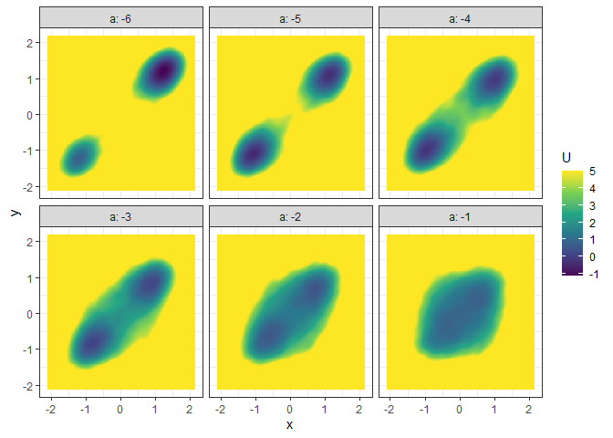

A toolbox for constructing potential landscapes for dynamical systems using Monte Carlo simulation. The method is based on the potential landscape definition by Wang et al. (2008) (also see Zhou & Li, 2016, for further mathematical discussions) and can be used for a large variety of models.
simlandr can help to:
- Run batch simulations for different parameter values;
- Store large simulation outputs into hard drive by the reusable
hash_big_matrixclass, and perform out-of-memory calculation; - Check convergence of the simulations;
- Construct 2d, 3d, 4d potential landscapes based on the simulation outputs;
- Calculate the minimal energy path and barrier height for transitions between states.
Installation
You can install the released version of simlandr from CRAN with:
install.packages("simlandr")And you can install the development version from GitHub with:
install.packages("devtools")
devtools::install_github("Sciurus365/simlandr")
devtools::install_github("Sciurus365/simlandr", build_vignettes = TRUE) # Use this command if you want to build vignettesExample
library(simlandr)
# Simulation
## Single simulation
single_output_grad <- sim_fun_grad(length = 1e4, seed = 1614)
## Batch simulation: simulate a set of models with different parameter values
batch_arg_set_grad <- new_arg_set()
batch_arg_set_grad <- batch_arg_set_grad %>%
add_arg_ele(
arg_name = "parameter", ele_name = "a",
start = -6, end = -1, by = 1
)
batch_grid_grad <- make_arg_grid(batch_arg_set_grad)
batch_output_grad <- batch_simulation(batch_grid_grad, sim_fun_grad,
default_list = list(
initial = list(x = 0, y = 0),
parameter = list(a = -4, b = 0, c = 0, sigmasq = 1)
),
length = 1e4,
seed = 1614,
bigmemory = FALSE
)
batch_output_grad
#> Output(s) from 6 simulations.
# Construct landscapes
## Example 1. 2D (x, y as U) landscape
l_single_grad_2d <- make_2d_static(single_output_grad, x = "x")
plot(l_single_grad_2d)
### To make the landscape smoother
make_2d_static(single_output_grad, x = "x", adjust = 5) %>% plot()
## Example 2. 3D (x, y, color as U) landscape
l_single_grad_3d <- make_3d_static(single_output_grad, x = "x", y = "y", adjust = 5)
plot(l_single_grad_3d, 2)
### plot(l_single_grad_3d) # to show the landscape in 3D (x, y, z)
## Example 3. 4D (x, y, z, color as U) landscape
set.seed(1614)
single_output_grad <- matrix(runif(nrow(single_output_grad), min = 0, max = 5), ncol = 1, dimnames = list(NULL, "z")) %>% cbind(single_output_grad)
l_single_grad_4d <- make_4d_static(single_output_grad, x = "x", y = "y", z = "z", n = 50)
### plot(l_single_grad_4d) # to show the landscape in 4D (x, y, z, color as U)
## Example 4. 2D (x, y as U) matrix (by a)
l_batch_grad_2d <- make_2d_matrix(batch_output_grad, x = "x", cols = "a", Umax = 8, adjust = 2)
plot(l_batch_grad_2d)
## Example 5. 3D (x, y, color as U) matrix (by a)
l_batch_grad_3d <- make_3d_matrix(batch_output_grad, x = "x", y = "y", cols = "a")
plot(l_batch_grad_3d)
## Example 6. 3D (x, y, z/color as U) animation (by a)
l_batch_grad_3d_animation <- make_3d_animation(batch_output_grad, x = "x", y = "y", fr = "a")
### plot(l_batch_grad_3d_animation) # to show the landscape animation in 3D (x, y, z as U)
### plot(l_batch_grad_3d_animation, 2) # to show the landscape animation in 3D (x, y, color as U)
# Calculate energy barriers
## Example 1. Energy barrier for the 2D landscape
b_single_grad_2d <- calculate_barrier(l_single_grad_2d,
start_location_value = -1, end_location_value = 1,
start_r = 0.3, end_r = 0.3
)
summary(b_single_grad_2d)
#> delta_U_start delta_U_end
#> 2.896270 2.806378
plot(l_single_grad_2d) + autolayer(b_single_grad_2d)
## Example 2. Energy barrier for the 3D landscape
b_single_grad_3d <- calculate_barrier(l_single_grad_3d,
start_location_value = c(-1, -1), end_location_value = c(1, 1),
start_r = 0.3, end_r = 0.3
)
summary(b_single_grad_3d)
#> delta_U_start delta_U_end
#> 3.491516 3.360399
plot(l_single_grad_3d, 2) + autolayer(b_single_grad_3d)
## Example 3. Energy barrier for many 2D landscapes
b_batch_grad_2d <- calculate_barrier(l_batch_grad_2d,
start_location_value = -1, end_location_value = 1,
start_r = 0.3, end_r = 0.3
)
summary(b_batch_grad_2d)
#> # A tibble: 6 × 9
#> start_x start_U end_x end_U saddle_x saddle_U cols delta_U_start delta_U_end
#> <dbl> <dbl> <dbl> <dbl> <dbl> <dbl> <dbl> <dbl> <dbl>
#> 1 -1.21 1.56 1.21 -0.332 -0.171 7.10 -6 5.54 7.43
#> 2 -1.08 0.243 1.08 0.348 0.0418 4.65 -5 4.40 4.30
#> 3 -0.957 0.355 0.977 0.454 0.0418 2.87 -4 2.52 2.42
#> 4 -0.808 0.530 0.807 0.572 0.0205 1.62 -3 1.09 1.05
#> 5 -0.702 0.710 0.700 0.659 0.0205 0.884 -2 0.174 0.225
#> 6 -0.702 0.895 0.700 0.834 -0.702 0.895 -1 0 0.0613
plot(l_batch_grad_2d) + autolayer(b_batch_grad_2d)
## Example 4. Energy barrier for many 3D landscapes
b_batch_grad_3d <- calculate_barrier(l_batch_grad_3d,
start_location_value = c(-1, -1), end_location_value = c(1, 1),
start_r = 0.3, end_r = 0.3
)
summary(b_batch_grad_3d)
#> # A tibble: 6 × 12
#> start_x start_y start_U end_x end_y end_U saddle_x saddle_y saddle_U cols
#> <dbl> <dbl> <dbl> <dbl> <dbl> <dbl> <dbl> <dbl> <dbl> <dbl>
#> 1 -1.21 -1.21 0.735 1.21 1.21 -1.14 -0.213 -0.259 9.40 -6
#> 2 -1.08 -1.10 -0.480 1.10 1.12 -0.369 0.0843 0.151 5.40 -5
#> 3 -0.978 -0.992 -0.257 0.977 0.993 -0.133 0.0843 0.000337 3.60 -4
#> 4 -0.851 -0.820 0.0797 0.849 0.820 0.148 0.0843 0.108 1.99 -3
#> 5 -0.702 -0.712 0.608 0.700 0.712 0.466 -0.000710 0.0866 1.33 -2
#> 6 -0.702 -0.712 1.12 0.700 0.712 1.11 -0.702 -0.712 1.12 -1
#> # … with 2 more variables: delta_U_start <dbl>, delta_U_end <dbl>
plot(l_batch_grad_3d) + autolayer(b_batch_grad_3d)
Vignettes
See the vignettes of this package (browseVignettes("simlandr") or https://doi.org/10.31234/osf.io/pzva3) for more examples and explanations. Also see https://doi.org/10.1080/00273171.2022.2119927 for our recent work using simlandr.